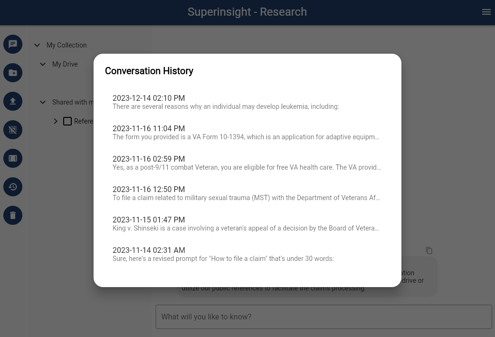

View History
You can browse and load your former conversation records by clicking the "History" button on the left navigation.
Once you find the conversation you want to check or continually chat with, click that record and it will be loaded back immediately.
